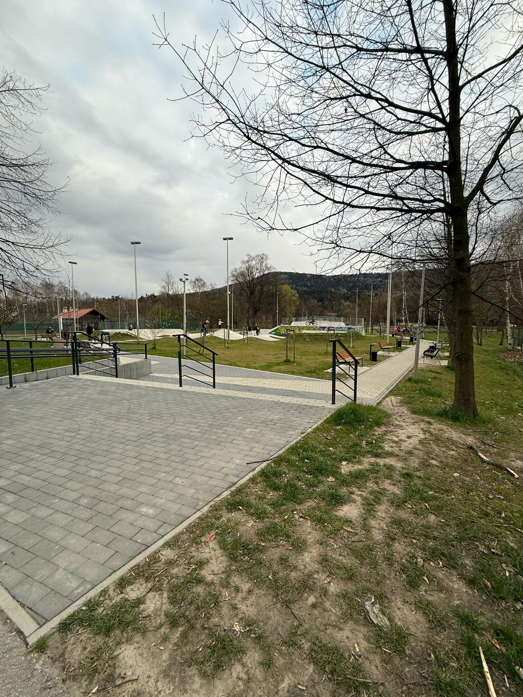

Skatepark w Myślenicach to nowoczesne miejsce, które zostało otwarte 13 kwietnia 2024 roku. Znajduje się w rejonie Zarabia, obok basenu letniego i kortów tenisowych. Jest to świetne miejsce dla osób, które lubią sport miejskiego typu, takie jak jazda na deskorolce, hulajnodze, BMX-ie czy rolkach.
Skatepark ma powierzchnię 1036 m² i oferuje różne przeszkody, które umożliwiają treningi i zabawę. Znajdziesz tu m.in. rampy, grindboxy, raili i różne elementy, które świetnie nadają się do trików. Oprócz samego skateparku, na terenie znajduje się także pumptrack, czyli tor rowerowy z falami i zakrętami, który jest idealny do jazdy na rowerze lub hulajnodze.
W skateparku są także strefy wypoczynkowe, ławki, kosze na śmieci oraz oświetlenie, co pozwala korzystać z obiektu nawet po zmroku. Dodatkowo jest tu przestrzeń do przechowywania rowerów oraz schody, które prowadzą na sam park. Dla osób z niepełnosprawnościami przygotowano pochylnie, żeby każdy mógł z niego korzystać.

Powrót do strony głównej...